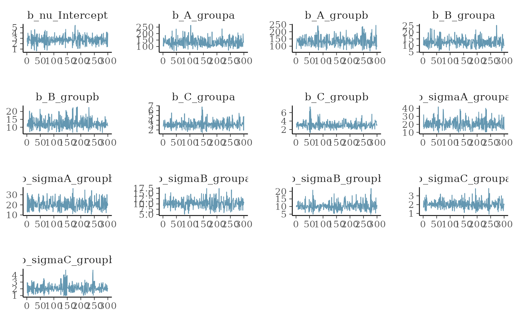
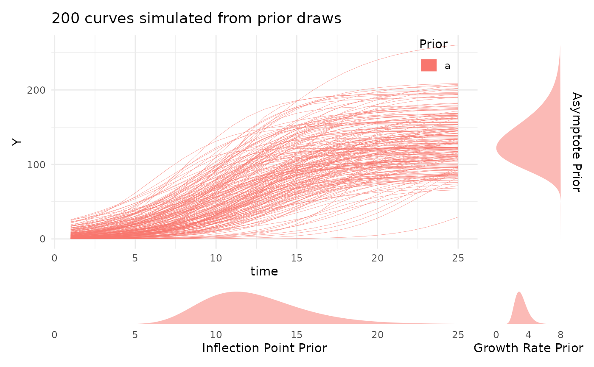
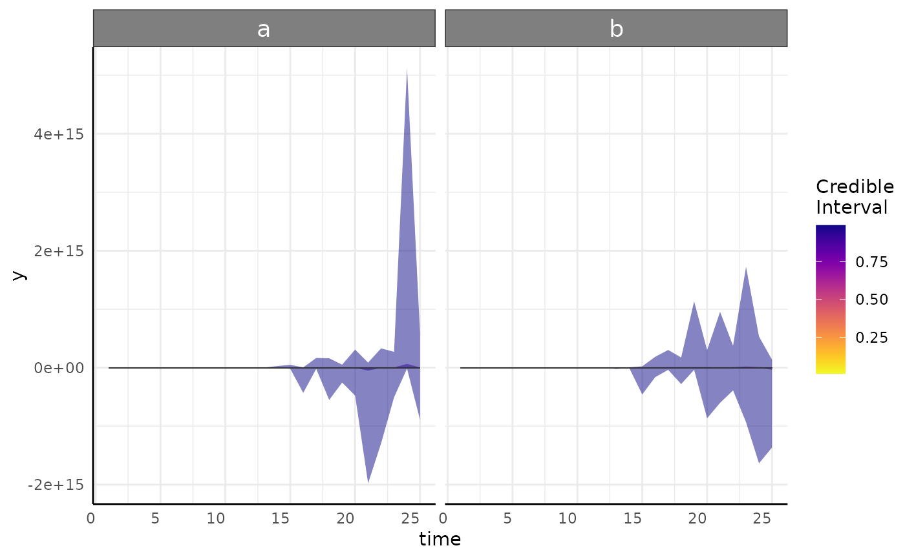

Function to help fulfill elements of the Bayesian Analysis Reporting Guidelines.
Source:R/barg.R
barg.RdThe Bayesian Analysis Reporting Guidelines were put forward by Kruschke (https://www.nature.com/articles/s41562-021-01177-7) to aide in reproducibility and documentation of Bayesian statistical analyses that are sometimes unfamiliar to reviewers or scientists. The purpose of this function is to summarize goodness of fit metrics from one or more Bayesian models made by growthSS and fitGrowth. See details for explanations of those metrics and the output.
Arguments
- fit
A conjugate object, brmsfit object, or a list of brmsfit objects in the case that you split models to run on subsets of the data for computational simplicity.
- ss
The growthSS output used to specify the model. If fit is a list then this can either be one growthSS list in which case the priors are assumed to be the same for each model or it can be a list of the same length as fit. Note that the only parts of this which are used are the
call$startwhich is expected to be a call,pcvrForm, anddflist elements, so if you have a list of brmsfit objects and no ss object you can specify a stand-in list. This can also be left NULL (the default) and posterior predictive plots and prior predictive plots will not be made.- priors
A list of priors similar to how they are specified in conjugate but named for the distribution you plan to use, see details and examples.
Value
A named list containing Rhat, ESS, NEFF, and Trace/Prior/Posterior Predictive plots. See details for interpretation.
Details
The majority of the Bayesian Analysis and Reporting Guidelines are geared towards statistical
methods that use MCMC or other numeric approximations. For those cases (here meaning brms models
fit by fitGrowth and growthSS) the output will contain:
General: This includes chain number, length, and total divergent transitions per model. Divergent transitions are a marker that the MCMC had something go wrong. Conceptually it may be helpful to think about rolling a marble over a 3D curve then having the marble suddenly jolt in an unexpected direction, something happened that suggests a problem/misunderstood surface. In practice you want extremely few (ideally no) divergences. If you do have divergences then consider specifying more control parameters (see brms::brm or examples for fitGrowth). If the problem persists then the model may need to be simplified. For more information on MCMC and divergence see the stan manual (https://mc-stan.org/docs/2_19/reference-manual/divergent-transitions).
ESS: ESS stands for Effective Sample Size and is a goodness of fit metric that approximates the number of independent replicates that would equate to the same amount of information as the (autocorrelated) MCMC iterations. ESS of 1000+ is often considered as a pretty stable value, but more is better. Still, 100 per chain may be plenty depending on your applications and the inference you wish to do. One of the benefits to using lots of chains and/or longer chains is that you will get more complete information and that benefit will be shown by a larger ESS. This is separated into "bulk" and "tail" to represent the middle and tails of the posterior distribution, since those can sometimes have very different sampling behavior. A summary and the total values are returned, with the summary being useful if several models are included in a list for fit argument
Rhat: Rhat is a measure of "chain mixture". It compares the between vs within chain values to assess how well the chains mixed. If chains did not mix well then Rhat will be greater than 1, with 1.05 being a broadly agreed upon cutoff to signify a problem. Running longer chains should result in lower Rhat values. The default in brms is to run 4 chains, partially to ensure that there is a good chance to check that the chains mixed well via Rhat. A summary and the total values are returned, with the summary being useful if several models are included in a list for fit argument
NEFF: NEFF is the NEFF ratio (Effective Sample Size over Total MCMC Sample Size). Values greater than 0.5 are generally considered good, but there is a consensus that lower can be fine down to about 0.1. A summary and the total values are returned, with the summary being useful if several models are included in a list for fit argument
mcmcTrace: A plot of each model's MCMC traces. Ideally these should be very mixed and stationary. For more options for visualizing MCMC diagnostics see
bayesplot::mcmc_trace.priorPredictive: A plot of data simulated from the prior using plotPrior. This should generate data that is biologically plausible for your situation, but it will probably be much more variable than your data. That is the effect of the mildly informative thick tailed lognormal priors. If you specified non-default style priors then this currently will not work.
posteriorPredictive: A plot of each model's posterior predictive interval over time. This is the same as plots returned from growthPlot and shows 1-99 coming to a mean yellow trend line. These should encompass the overwhelming majority of your data and ideally match the variance pattern that you see in your data. If parts of the predicted interval are biologically impossible (area below 0, percentage about 100 model should be reconsidered.
For analytic solutions (ie, the conjugate class) there are fewer elements.
priorSensitivity: Patchwork of prior sensitivity plots showing the distribution of posterior probabilities, any interpretation changes from those tests, and the random priors that were used. This is only returned if the
priorsargument is specified (see below).posteriorPredictive: Plot of posterior predictive distributions similar to that from a non-longitudinal
fitGrowthmodel fit with brms.Summary: The summary of the
conjugateobject.
Priors here are specified using a named list. For instance, to use 100 normal priors with means
between 5 and 20 and standard deviations between 5 and 10 the prior argument would be
list("rnorm" = list("mean" = c(5, 20), "sd" = c(5, 10), "n" = 100))).
The priors that are used in sensitivity analysis are drawn randomly from within the ranges specified
by the provided list. If you are unsure what random-generation function to use then check the
conjugate docs where the distributions are listed for each method in the details section.
See also
plotPrior for visual prior predictive checks.
Examples
# \donttest{
simdf <- growthSim("logistic",
n = 20, t = 25,
params = list("A" = c(200, 160), "B" = c(13, 11), "C" = c(3, 3.5))
)
ss <- growthSS(
model = "logistic", form = y ~ time | id / group, sigma = "logistic",
df = simdf, start = list(
"A" = 130, "B" = 12, "C" = 3,
"sigmaA" = 20, "sigmaB" = 10, "sigmaC" = 2
), type = "brms"
)
fit_test <- fitGrowth(ss,
iter = 600, cores = 1, chains = 1, backend = "cmdstanr",
sample_prior = "only" # only sampling from prior for speed
)
#> Start sampling
#> Init values were only set for a subset of parameters.
#> Missing init values for the following parameters:
#> Intercept_nu
#>
#> To disable this message use options(cmdstanr_warn_inits = FALSE).
#> Running MCMC with 1 chain...
#>
#> Chain 1 Iteration: 1 / 600 [ 0%] (Warmup)
#> Chain 1 Iteration: 100 / 600 [ 16%] (Warmup)
#> Chain 1 Iteration: 200 / 600 [ 33%] (Warmup)
#> Chain 1 Iteration: 300 / 600 [ 50%] (Warmup)
#> Chain 1 Iteration: 301 / 600 [ 50%] (Sampling)
#> Chain 1 Iteration: 400 / 600 [ 66%] (Sampling)
#> Chain 1 Iteration: 500 / 600 [ 83%] (Sampling)
#> Chain 1 Iteration: 600 / 600 [100%] (Sampling)
#> Chain 1 finished in 0.0 seconds.
#> Loading required namespace: rstan
barg(fit_test, ss)
#> Warning: The ESS has been capped to avoid unstable estimates.
#> Warning: The ESS has been capped to avoid unstable estimates.
#> Warning: The ESS has been capped to avoid unstable estimates.
#> Warning: The ESS has been capped to avoid unstable estimates.
#> Warning: The ESS has been capped to avoid unstable estimates.
#> Warning: The ESS has been capped to avoid unstable estimates.
#> $General
#> chains iter num.divergent model
#> 1 1 600 0 1
#>
#> $Rhat
#> $Rhat$summary
#> b_nu_Intercept b_A_groupa b_A_groupb b_B_groupa b_B_groupb b_C_groupa
#> Min. 0.9976693 1.003955 1.005916 1.003478 1.002858 0.9974221
#> 1st Qu. 0.9976693 1.003955 1.005916 1.003478 1.002858 0.9974221
#> Median 0.9976693 1.003955 1.005916 1.003478 1.002858 0.9974221
#> Mean 0.9976693 1.003955 1.005916 1.003478 1.002858 0.9974221
#> 3rd Qu. 0.9976693 1.003955 1.005916 1.003478 1.002858 0.9974221
#> Max. 0.9976693 1.003955 1.005916 1.003478 1.002858 0.9974221
#> b_C_groupb b_sigmaA_groupa b_sigmaA_groupb b_sigmaB_groupa
#> Min. 0.9981733 0.9992711 0.997593 1.022887
#> 1st Qu. 0.9981733 0.9992711 0.997593 1.022887
#> Median 0.9981733 0.9992711 0.997593 1.022887
#> Mean 0.9981733 0.9992711 0.997593 1.022887
#> 3rd Qu. 0.9981733 0.9992711 0.997593 1.022887
#> Max. 0.9981733 0.9992711 0.997593 1.022887
#> b_sigmaB_groupb b_sigmaC_groupa b_sigmaC_groupb Intercept_nu lprior
#> Min. 1.022139 1.001639 1.005169 0.9976693 0.9981946
#> 1st Qu. 1.022139 1.001639 1.005169 0.9976693 0.9981946
#> Median 1.022139 1.001639 1.005169 0.9976693 0.9981946
#> Mean 1.022139 1.001639 1.005169 0.9976693 0.9981946
#> 3rd Qu. 1.022139 1.001639 1.005169 0.9976693 0.9981946
#> Max. 1.022139 1.001639 1.005169 0.9976693 0.9981946
#> lp__
#> Min. 1.001424
#> 1st Qu. 1.001424
#> Median 1.001424
#> Mean 1.001424
#> 3rd Qu. 1.001424
#> Max. 1.001424
#>
#> $Rhat$complete
#> b_nu_Intercept b_A_groupa b_A_groupb b_B_groupa b_B_groupb b_C_groupa
#> 1 0.9976693 1.003955 1.005916 1.003478 1.002858 0.9974221
#> b_C_groupb b_sigmaA_groupa b_sigmaA_groupb b_sigmaB_groupa b_sigmaB_groupb
#> 1 0.9981733 0.9992711 0.997593 1.022887 1.022139
#> b_sigmaC_groupa b_sigmaC_groupb Intercept_nu lprior lp__ model
#> 1 1.001639 1.005169 0.9976693 0.9981946 1.001424 1
#>
#>
#> $NEFF
#> $NEFF$summary
#> b_nu_Intercept b_A_groupa b_A_groupb b_B_groupa b_B_groupb b_C_groupa
#> Min. 0.9066991 0.8493483 0.5698948 0.4155772 0.7343797 0.5551452
#> 1st Qu. 0.9066991 0.8493483 0.5698948 0.4155772 0.7343797 0.5551452
#> Median 0.9066991 0.8493483 0.5698948 0.4155772 0.7343797 0.5551452
#> Mean 0.9066991 0.8493483 0.5698948 0.4155772 0.7343797 0.5551452
#> 3rd Qu. 0.9066991 0.8493483 0.5698948 0.4155772 0.7343797 0.5551452
#> Max. 0.9066991 0.8493483 0.5698948 0.4155772 0.7343797 0.5551452
#> b_C_groupb b_sigmaA_groupa b_sigmaA_groupb b_sigmaB_groupa
#> Min. 0.3889349 0.7298754 0.9691926 0.7570529
#> 1st Qu. 0.3889349 0.7298754 0.9691926 0.7570529
#> Median 0.3889349 0.7298754 0.9691926 0.7570529
#> Mean 0.3889349 0.7298754 0.9691926 0.7570529
#> 3rd Qu. 0.3889349 0.7298754 0.9691926 0.7570529
#> Max. 0.3889349 0.7298754 0.9691926 0.7570529
#> b_sigmaB_groupb b_sigmaC_groupa b_sigmaC_groupb Intercept_nu lprior
#> Min. 0.6675187 0.6486787 0.3101548 0.9066991 0.3243999
#> 1st Qu. 0.6675187 0.6486787 0.3101548 0.9066991 0.3243999
#> Median 0.6675187 0.6486787 0.3101548 0.9066991 0.3243999
#> Mean 0.6675187 0.6486787 0.3101548 0.9066991 0.3243999
#> 3rd Qu. 0.6675187 0.6486787 0.3101548 0.9066991 0.3243999
#> Max. 0.6675187 0.6486787 0.3101548 0.9066991 0.3243999
#> lp__
#> Min. 0.2808089
#> 1st Qu. 0.2808089
#> Median 0.2808089
#> Mean 0.2808089
#> 3rd Qu. 0.2808089
#> Max. 0.2808089
#>
#> $NEFF$complete
#> b_nu_Intercept b_A_groupa b_A_groupb b_B_groupa b_B_groupb b_C_groupa
#> 1 0.9066991 0.8493483 0.5698948 0.4155772 0.7343797 0.5551452
#> b_C_groupb b_sigmaA_groupa b_sigmaA_groupb b_sigmaB_groupa b_sigmaB_groupb
#> 1 0.3889349 0.7298754 0.9691926 0.7570529 0.6675187
#> b_sigmaC_groupa b_sigmaC_groupb Intercept_nu lprior lp__ model
#> 1 0.6486787 0.3101548 0.9066991 0.3243999 0.2808089 1
#>
#>
#> $ESS
#> $ESS$summary
#> A_groupa A_groupb B_groupa B_groupb C_groupa C_groupb
#> Bulk_ESS.Min. 407.2834 511.4818 623.7964 743.1364 743.1364 591.3028
#> Bulk_ESS.1st Qu. 407.2834 511.4818 623.7964 743.1364 743.1364 591.3028
#> Bulk_ESS.Median 407.2834 511.4818 623.7964 743.1364 743.1364 591.3028
#> Bulk_ESS.Mean 407.2834 511.4818 623.7964 743.1364 743.1364 591.3028
#> Bulk_ESS.3rd Qu. 407.2834 511.4818 623.7964 743.1364 743.1364 591.3028
#> Bulk_ESS.Max. 407.2834 511.4818 623.7964 743.1364 743.1364 591.3028
#> Tail_ESS.Min. 254.8045 170.9684 124.6731 220.3139 166.5436 116.6805
#> Tail_ESS.1st Qu. 254.8045 170.9684 124.6731 220.3139 166.5436 116.6805
#> Tail_ESS.Median 254.8045 170.9684 124.6731 220.3139 166.5436 116.6805
#> Tail_ESS.Mean 254.8045 170.9684 124.6731 220.3139 166.5436 116.6805
#> Tail_ESS.3rd Qu. 254.8045 170.9684 124.6731 220.3139 166.5436 116.6805
#> Tail_ESS.Max. 254.8045 170.9684 124.6731 220.3139 166.5436 116.6805
#> nu_Intercept sigmaA_groupa sigmaA_groupb sigmaB_groupa
#> Bulk_ESS.Min. 694.1820 699.3189 555.1908 494.7611
#> Bulk_ESS.1st Qu. 694.1820 699.3189 555.1908 494.7611
#> Bulk_ESS.Median 694.1820 699.3189 555.1908 494.7611
#> Bulk_ESS.Mean 694.1820 699.3189 555.1908 494.7611
#> Bulk_ESS.3rd Qu. 694.1820 699.3189 555.1908 494.7611
#> Bulk_ESS.Max. 694.1820 699.3189 555.1908 494.7611
#> Tail_ESS.Min. 272.0097 218.9626 290.7578 227.1159
#> Tail_ESS.1st Qu. 272.0097 218.9626 290.7578 227.1159
#> Tail_ESS.Median 272.0097 218.9626 290.7578 227.1159
#> Tail_ESS.Mean 272.0097 218.9626 290.7578 227.1159
#> Tail_ESS.3rd Qu. 272.0097 218.9626 290.7578 227.1159
#> Tail_ESS.Max. 272.0097 218.9626 290.7578 227.1159
#> sigmaB_groupb sigmaC_groupa sigmaC_groupb
#> Bulk_ESS.Min. 333.6468 715.2373 558.64697
#> Bulk_ESS.1st Qu. 333.6468 715.2373 558.64697
#> Bulk_ESS.Median 333.6468 715.2373 558.64697
#> Bulk_ESS.Mean 333.6468 715.2373 558.64697
#> Bulk_ESS.3rd Qu. 333.6468 715.2373 558.64697
#> Bulk_ESS.Max. 333.6468 715.2373 558.64697
#> Tail_ESS.Min. 200.2556 194.6036 93.04644
#> Tail_ESS.1st Qu. 200.2556 194.6036 93.04644
#> Tail_ESS.Median 200.2556 194.6036 93.04644
#> Tail_ESS.Mean 200.2556 194.6036 93.04644
#> Tail_ESS.3rd Qu. 200.2556 194.6036 93.04644
#> Tail_ESS.Max. 200.2556 194.6036 93.04644
#>
#> $ESS$complete
#> par Bulk_ESS Tail_ESS model
#> 1 nu_Intercept 694.1820 272.00973 1
#> 2 A_groupa 407.2834 254.80448 1
#> 3 A_groupb 511.4818 170.96844 1
#> 4 B_groupa 623.7964 124.67315 1
#> 5 B_groupb 743.1364 220.31390 1
#> 6 C_groupa 743.1364 166.54355 1
#> 7 C_groupb 591.3028 116.68047 1
#> 8 sigmaA_groupa 699.3189 218.96263 1
#> 9 sigmaA_groupb 555.1908 290.75779 1
#> 10 sigmaB_groupa 494.7611 227.11588 1
#> 11 sigmaB_groupb 333.6468 200.25562 1
#> 12 sigmaC_groupa 715.2373 194.60362 1
#> 13 sigmaC_groupb 558.6470 93.04644 1
#>
#>
#> $mcmcTrace
#> $mcmcTrace[[1]]

#>
#>
#> $priorPredictive
#> $priorPredictive[[1]]

#>
#>
#> $posteriorPredictive
#> $posteriorPredictive[[1]]

#>
#>
fit_2 <- fit_test
fit_list <- list(fit_test, fit_2)
x <- barg(fit_list, list(ss, ss))
#> Warning: The ESS has been capped to avoid unstable estimates.
#> Warning: The ESS has been capped to avoid unstable estimates.
#> Warning: The ESS has been capped to avoid unstable estimates.
#> Warning: The ESS has been capped to avoid unstable estimates.
#> Warning: The ESS has been capped to avoid unstable estimates.
#> Warning: The ESS has been capped to avoid unstable estimates.
#> Warning: The ESS has been capped to avoid unstable estimates.
#> Warning: The ESS has been capped to avoid unstable estimates.
#> Warning: The ESS has been capped to avoid unstable estimates.
#> Warning: The ESS has been capped to avoid unstable estimates.
#> Warning: The ESS has been capped to avoid unstable estimates.
#> Warning: The ESS has been capped to avoid unstable estimates.
x <- conjugate(
s1 = rnorm(10, 10, 1), s2 = rnorm(10, 13, 1.5), method = "t",
priors = list(
list(mu = 10, sd = 2),
list(mu = 10, sd = 2)
),
plot = FALSE, rope_range = c(-8, 8), rope_ci = 0.89,
cred.int.level = 0.89, hypothesis = "unequal",
bayes_factor = c(50, 55)
)
#> Warning: plot argument is deprecated, use plot.conjugate instead.
b <- barg(x, priors = list("rnorm" = list("n" = 10, "mean" = c(5, 20), "sd" = c(5, 10))))
# }